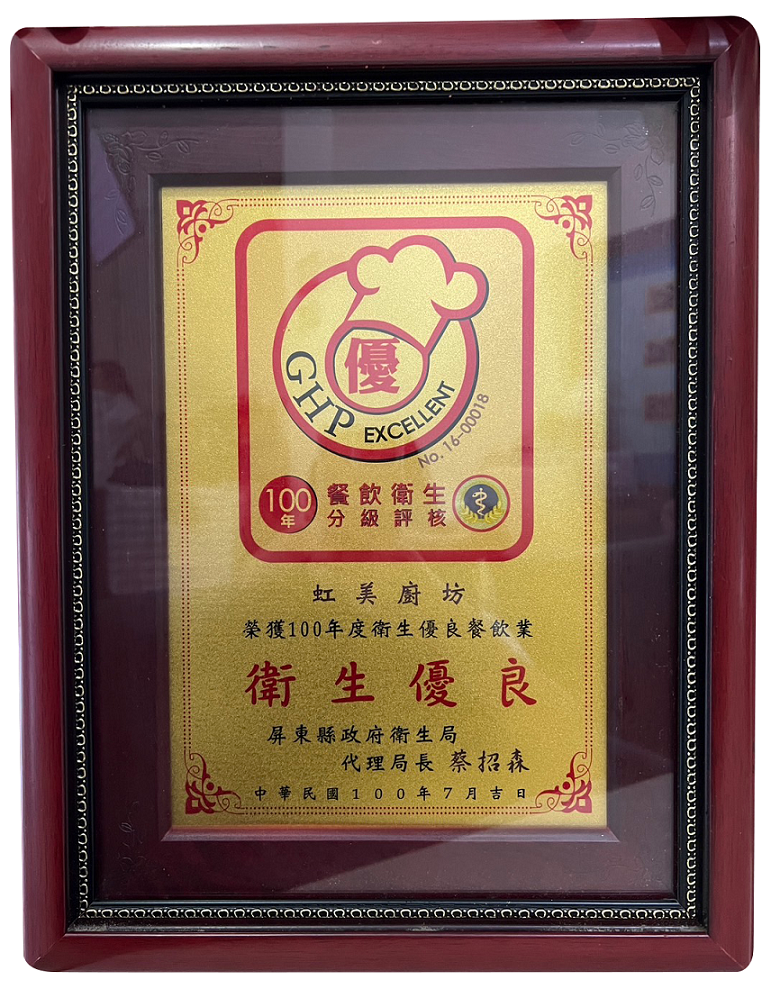
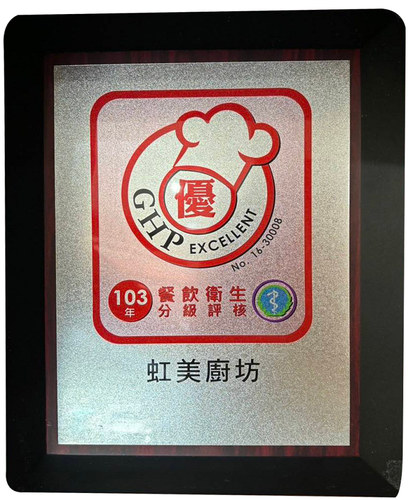

關於虹美
創立理念
一切從一個問題開始：吃錯了，身體會告訴你
「我看過太多病人，吃出問題，也吃不回健康。 我希望，有一間店，讓人能在外食中也吃對，而不是等病了才來後悔。」
—— 創辦人 李洮俊醫師
李醫師在醫學領域已有 40 多年的經驗，專精於新陳代謝與腎臟病照護。他心想：❝如果我能開一家餐廳，讓大家在還沒生病前，就能吃得對呢？❞ 於是，這家店誕生了。
虹美的堅持
提供健康美味營養均衡之餐食，聘請五星級廚師掌廚，全程秉持低油、低糖、少鹽之烹調方法，在享受美食的同時，又能兼顧健康。
專業認證：衛生優良
虹美廚坊連續多年榮獲屏東縣政府衛生局評核之「餐飲衛生分級評核：優良」肯定。

100年度餐飲衛生分級評核【優】
